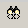

) or chooses Transform->Execute Scenario. See the section on Transformations for more information about Scenarios.
) or chooses Transform->Execute Scenario. See the section on Transformations for more information about Scenarios.
Exchanger XML Editor uses the concept of Types to map one or more grammars used by XML files to physical locations on disk or on the network.
Exchanger Types allow the user to specify different grammars for validation, tag completion and Schema Viewer/Outliner functionality. The Type can automatically be associated when opening a file based on a combination of the root element name, the Public ID (if any), System ID (if any) and the namespace prefix/URI (if any). If a file corresponds to more than one Type definition, a dialog prompts the user to choose between the candidate Types. An icon can be specified to easily identify files of this type across the editor and one or more extensions can be specified which can be used as filters in file choosers. Finally, one or more scenarios can be associated with a type - when Transform->Execute Scenario is chosen, only those scenarios associated with the active Type will be displayed.
There are a number of reasons why it may be useful to associate more than one grammar with an XML file.
Offline versus Online operation: An XML file may reference a grammar on the web that is not available when the user is offline. It would be nice to be able to validate the file using a local copy of the grammar, while not having to change the actual reference to the grammar in the document every time you go on or off line.
Some grammars have no defined mechanisms for being referenced from an instance document. XML Schemas can be identified using the schemaLocation attribute but this is only a "hint" to the processor, while RelaxNG grammars have no standard means at all of being referenced.
It is often convenient to use one (potentially large) grammar for validation with a smaller subset of the grammar being used to restrict tag-prompting to commonly used elements and attributes, thus simplifying the editing process.
Certain functionality in the Exchanger XML Editor, such as the Schema Viewer or the easy, tag-free content generation using the Outliner, depends on the existence of an XML Schema. It is possible to use these functions with documents that conform to DTDs or RelaxNG grammars by specifying a corresponding XML Schema in a type definition.
Because Types can override the actual grammar settings in a document instance, it is important to know which grammars are being used for what purposes at any one time. In light of this, Exchanger displays the active Document Properties in a window on the left-hand side, under the Projects view. (If the Document Properties window is minimized, simply click the small triangle pointing upwards on the right and it will reappear - similarly, to minimize the window, click the downwards-pointing triangle.) The window shows the name of the Validation, Tag Completion and Schema Viewer/Outliner grammars for the active document, if any - hover over each to see a tool tip containg the full file path. Double-click on any filename in the Document Properties window to automatically open it for editing.

Figure 1. Document Properties
A number of built-in types ship with Exchanger XML Editor to simplify the editing process, including ones for XHTML, Docbook, SVG, XSLT, XML Schema, RelaxNG, XSLFO, etc. If you do not want the built-in types to override the settings in your document instance or in any XML Catalogs you may be using, then go to the File->Preferences dialog and in the Views tab, ensure that Check for Type opening Document is turned off. Alternatively, you can delete the type(s) using the Schema->Manage Types dialog and can always use the Import feature in Schema->Manage Types to restore any deleted built-in types, as described later in this section.
Open the file contacts.xml in the Schema Viewer project. Select Schema->Create Type. This brings up the Type Properties dialog with the Definition tab showing by default.

Figure 2. Create Type - Definition
The Name of the XML Type is set, by default, to that of the root element of the active document, if any. This name can be changed to something more appropriate, if you wish. An icon can also be specified for quickly identifying the type associated with a file throughout the editor, for example in the file choosers and the projects window.
The optional Extensions field is used to define the file extensions that this Type will apply to. This extension can later be used as a filter in File Choosers.
The Type is associated with one or more of the following: the root element name; the namespace; and/or the Public ID and System ID for DTDs. When opening a document, if the preference Check for Type Opening Document is set on the XML tab in the File->Preferences dialog, the editor will check these four features and will automatically set the appropriate Type. So, even if there is no grammar set in the document (or the grammar is unavailable), the editor can load an appropriate grammar to be used for tag prompting and an XML Schema for the Schema Viewer and Outliner, and also can validate the document against an alternative DTD, XML Schema or RelaxNG schema.
In the Grammars tab of the Create Type dialog, it is possible to set one or more grammars for the purposes of validation, tag prompting and/or for the schema viewer/outliner.

Figure 3. Create Type - Grammars
The Validation section of the dialog allows the user to specify what grammar should be used when validating the document using the XML->Validate menu item (or the Validate button). Supported Grammars for Validation include DTD, XML Schema, RelaxNG, RelaxNG Compact Syntax and Namespace Routing Language.
The Outliner/Schema Viewer section of the dialog allows the user to specify what XML Schema should be used for the Schema Viewer and Outliner functionality (Note: this functionality does not currently support DTDs and RelaxNG directly). Therefore, it is possible to have an XML Schema driving the editor functionality such as the Schema Viewer and Outliner, while at the same time validating against a DTD or RelaxNG schema (or even an alternative XML Schema).
In the Other tab of the dialog, it is possible to automatically associate fragments, transformation scenarios and XPaths with a Type definition. See the following sections for more information on Fragments and Named XPaths.
When executing a scenario, the scenarios associated
with the Type definition of the active document will be displayed in the Select Scenario dialog. If a default
scenario has been set for a Type, that scenario will automatically be executed when the user presses the Execute Default
Scenario button () or chooses Transform->Execute Scenario. See the section on Transformations for more information about Scenarios.
The Editor will attempt to set the appropriate Type when opening a file, provided Check Type on Opening Document is set in the View tab of the Preferences dialog. Alternatively, the type can be set explicitly by choosing Schema->Set Type...
Type Definitions can be changed using Schema->Manage Types... and selecting the type from the popup list. Alternatively, the type definition corresponding to the current open document can be quickly modified using Schema->Type Properties.
Fragments are a mechanism to easily add user-defined chunks of content using simple key strokes. For now, Fragments are linked to Types (i.e. you must create a Type to create Fragments) but this restriction will be relaxed in a future version. To add a fragment to the new Contacts type, choose Schema->Type Properties dialog and select the Other tab. In the Fragments section of the dialog, press the Add button and the Fragment Properties dialog appears. Enter a name for that fragment, for example, Address and enter a shortcut combination, for example, Ctrl+Shift+A by holding down the 3 keys simultaneously. Note that is the shortcut you have chosen has already been used by the Editor, then the shortcut will not display and you must choose an alternative. (You can change the built-in shortcuts if you really want to assign an already used combination to a fragment). By default, the content will be placed inline, but it is possible to specify that it should be output on a new line by selecting Block. (New Line characters in the content will be honoured, and the content will be indented appropriately if Smart Indentation is turned on).

Figure 4. Fragment Properties
In the Content section of the dialog, enter the desired content for insertion, for example: <Address type="${cursor}"> <Company>${Company}</Company> <Street>${Street}</Street> </Address> (Note that the content does not have to be well-formed). A number of Macros are availabe that can make Fragments even more powerful. The ${cursor} macro will automatically move the cursor to that location in the editor after the insertion, while the ${selection} macro can be used repeatedly to output the text currently highlighted in the Editor. Any other macros, such as ${Company} and ${Street} above, will cause a dialog to be displayed prompting for the actual values when the shortcut is used.
Save the Type definition, then open contacts.xml and set the type, if necessary, using Schema->Set Type... Now anytime you type the shortcut Ctrl+Shift+A, a dialog will appear prompting for the Company and Street values. Enter these and the fragment will be inserted in the document (starting on a new line because of the use of Block), and the cursor will move into the "type" attribute value.
Fragments can be accessed via a number of different methods in the Editor. To see a list of all the currently available fragments, type Ctrl+Shift+Space or choose Edit->Insert Fragment... Select items on the popup using the up and down arrows or typing the first character of a name repeatedly will cycle through all fragments starting with that letter. Alternatively, if icons have been specified for the fragments, they will be displayed in the Fragment Buttons Toolbar which will appear vertically on the left-hand side of the editing window. The visibility of this toolbar is controlled via the View->Toolbar menu item.
The Navigator displays a tree view of the nodes in the current document that can be filtered by Namespace or using an XPath query. Specific XPaths for the Navigator can be saved with each Type definition, and will be available on the drop-down XPath menu when documents of that type are open. For example, to create a list of figures for DocBook documents, choose the Other tab in the Schema->Type Properties dialog. In the Named XPath section, press Add. Add a Name, for example, "List of Figures" and enter the XPath //figure/title. In the Settings, turn off showing element names, attriibute names and attribute values, leaving just the content of the title elements to be displayed in the Navigator. Now, after saving, click on the drop-down beside the XPath Filter button  and select the "List of Figures" names XPath.
Exchanger XML Editor automatically provides built-in types for common document grammars such as XHTML, Docbook, SVG, XSLT, XML Schema, RelaxNG, XSLFO, etc. If these types do not appear when you choose Schema->Manage Types or in the File->New dialog (for example, they may previously have been deleted or you may have upgraded from an earlier release that did not include them) then it is possible reinstate them using the Import Types functionality. To enable this functionality, select Schema->Manage Types, press the Import button and choose the file All.types in the types directory where you installed Exchanger. Now when a user creates new documents (using File->New), the types are available for use. Similarly, when a user opens documents that are of a known type, functionality such as tag-prompting, validation and easy content creation with the Outliner is automatically available.
It is also possible to export Type definions for sharing with colleagues, using the Export button on the Schema->Manage Types dialog.